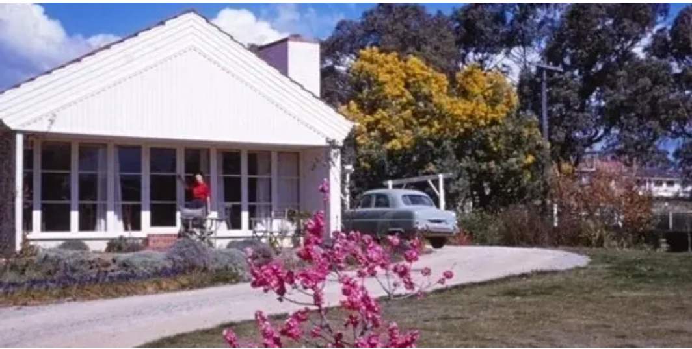
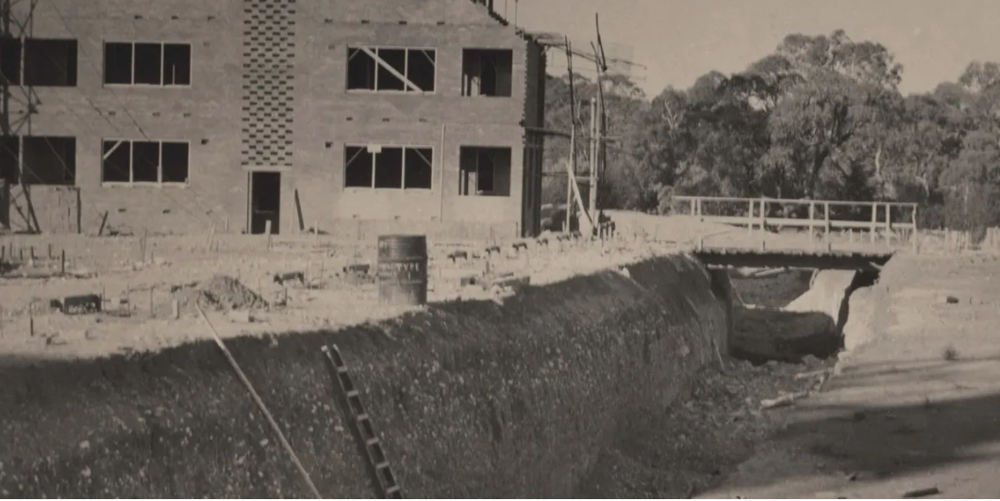
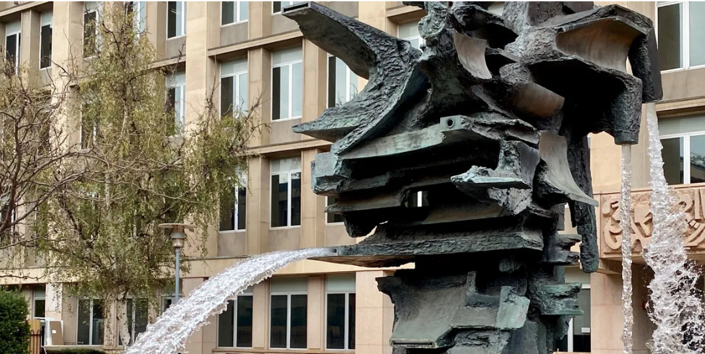

Around the Block on Grey St, Deakin
5 November 2022, 10.00am
Join Architect David Brand and Canberra Modern in Deakin for a unique perspective on one of Canberra’s iconic
neighbourhoods – recounted as a raw, new pioneering suburb, built by its unique community of diplomat, public service
and academic families.
Growing up in Canberra in the 1950s & ’60s was an immersive Modernist experience for David Brand, a Melbourne based
architect born and raised in Deakin. Their houses and gardens express the ideals of Modern Australian living, in a
Post-War age of austerity, and optimism.
Following the walk, join Canberra Modern and David Brand for an 'In Conversation' further reflecting on his childhood
neighbourhood — its houses, gardens, society and attitudes, its unique Canberran demographics.
Light refreshments provided.

What Lies Beneath: The Tunnels of University House and Hidden ANU
11 , 17 & 18 November 2022, 7.00pm
Post WWII and entering the cold war era, architects and bureaucrats alike were prepared for anything. Built in 1954,
University House was the crown jewel of the newly established Australian National University, but more than just
accommodation for staff and students, the building offered a secret safe haven in the event of a military attack on the
capital in the form of complex underground tunnels. Join Canberra Modern’s Amy Jarvis and Tim the Yowie Man on a behind
the scenes tour of these tunnels and learn how this building, and the rest of ANU hold a myriad of secrets and mysteries
within their design and history.

Art and Architecture in the Parliamentary Zone
12 November 2022, 10.00am
Join Canberra Modern’s Rachel Jackson and Art Historian Deborah Clark on a walking tour to explore the unique and
diverse public sculpture in the parliamentary zone, while understanding the architectural and planning context of this
significant area. Discover how Canberra inspired and became home to major works by internationally renowned modernist
artists such as Tom Bass, Bert Flugelman, Clement Meadmore, Henry Moore, Norma Redpath and more.

Art and Architecture at the ANU
19 November 2022, 10.00am
The ANU campus has over 150 buildings, ranging from early Federal Capital style to modernist design, and more recently
to buildings with an emphasis on sustainability. Join Canberra Modern’s Amy Jarvis and Art Historian Deborah Clark to
explore the architects, art, designs, and disagreements which helped to create the spectacular University you see today!